Jay, a performance marketer at a candle brand, vlogs one working day; every problem he hits is handled by one of the 16 agents, then the value math and the CTA.
61.0 s with the outro · 111 words of dialogue · 2 generation units · estimated $33.45
Open issues
Warnings
one continuous 30 s vlog take: the hook, the 7 am alarm, the 9:30 cafe sprint, the 12:15 walk
30 s, 2 takes, starts at 0 s
A 30 second creator vlog, one continuous generation of six shots across four places, the first half of one working day. Vertical 9:16, an authentic creator day-in-the-life vlog shot on a phone: handheld, natural light, real and slightly imperfect, never glossy. Jay's face, hair and wardrobe exactly as in the references: the olive overshirt over the white tee and the thin silver chain in every shot, all day. Hard cuts between locations, like a vlog edit. BRANDS: the only logo anywhere is the fictional NORTHLANE label on candle jars and boxes, as on the supplied board; every other sign, screen, laptop and phone is blank or shows abstract colour, never readable text or a real logo. No on-screen text, captions or subtitles. SOUND: NO MUSIC AT ALL. Only Jay's voice plus natural room sound for each place. VOICE: Jay, a North American man of 28, warm mid baritone, quick natural creator energy, conversational and a little wry. Same voice in every shot. He is always on camera and his lips always match his words; he talks straight into the lens. MOTION: natural real-time speed in every shot, never slow motion, never a freeze; the phone camera moves slightly with his hand; he gestures, blinks and breathes naturally. PHYSICS: one phone and one mug at a time, objects never change shape or jump between hands; no morphing, flashes or glitch frames. 0 to 5.5 s: 7 am, the kitchen: a handheld selfie at arm's length, Jay holds a coffee mug, raises his eyebrows with a knowing grin and talks straight into the lens: "D-to-C founders, ecom teams, performance marketers: sixty seconds, and I'll save you fifty-six hundred a year." (D-to-C said as three letters, dee to see) 5.5 to 9 s: same selfie, he lifts the mug slightly, easy and friendly: "Here's my day running ads for a candle brand." 9 to 12.5 s: cut, 7 am at the kitchen counter: Jay frowns at the phone in his other hand, then looks up into the selfie lens, dry and a little tired: "Seven a.m. My best ad is tired." 12.5 to 16 s: same place, he nods, matter-of-fact: "The agent tells me exactly what to fix." 16 to 23 s: cut, 9:30 am, a cafe window table, the phone propped on the table, Jay behind an open laptop with a flat white, typing then looking up at the lens, brisk then pleased: "Nine thirty. Four new ads by noon? One folder. Done." 23 to 30 s: cut, 12:15 pm, walking down a sunny tree-lined sidewalk, a walking selfie at arm's length, amused and conspiratorial: "Twelve fifteen. Competitor drops twenty percent. The agent says: bundle it." DELIVERY: every quoted line is spoken clearly, exactly as written, once, acted not read, relaxed natural pace with real pauses between lines (never rushed). Nothing outside the quotes is ever spoken.
one continuous 28 s vlog take: the 3 pm checkout leak, 6:30 real profit, the 7 pm value math, bonuses and CTA
28 s, 2 takes, starts at 30 s
A 28 second creator vlog, one continuous generation of five shots across two places, continuing the same working day (same man, same outfit). Vertical 9:16, an authentic creator day-in-the-life vlog shot on a phone: handheld, natural light, real and slightly imperfect, never glossy. Jay's face, hair and wardrobe exactly as in the references: the olive overshirt over the white tee and the thin silver chain in every shot, all day. Hard cuts between locations, like a vlog edit. BRANDS: the only logo anywhere is the fictional NORTHLANE label on candle jars and boxes, as on the supplied board; every other sign, screen, laptop and phone is blank or shows abstract colour, never readable text or a real logo. No on-screen text, captions or subtitles. SOUND: NO MUSIC AT ALL. Only Jay's voice plus natural room sound for each place. VOICE: Jay, a North American man of 28, warm mid baritone, quick natural creator energy, conversational and a little wry. Same voice in every shot. He is always on camera and his lips always match his words; he talks straight into the lens. MOTION: natural real-time speed in every shot, never slow motion, never a freeze; the phone camera moves slightly with his hand; he gestures, blinks and breathes naturally. PHYSICS: one phone and one mug at a time, objects never change shape or jump between hands; no morphing, flashes or glitch frames. 0 to 6 s: 3 pm, the Northlane office: the phone propped on the desk, Jay beside his laptop with shelves of NORTHLANE candles behind him, focused, to the lens: "Three p.m. Checkout's leaking. The C-R-O agent ranks the fixes." (C-R-O said as three letters) 6 to 10 s: cut, 6:30 pm, golden hour on the living room couch, the laptop on his knees, a lit candle on the table, relaxed and satisfied, to the lens: "Six thirty. Real profit, not just ad numbers." 10 to 17.5 s: cut, 7 pm, warm lamp light, the phone on a tripod, Jay sitting forward on the couch, calm and confident, slowing right down on the price: "Eight A-I tools: four sixty-eight a month. This: six ninety-nine rupees, once." 17.5 to 22 s: same shot, upbeat, a little sly: "Plus three bonuses, and a free swipe file with any add-on." 22 to 27 s: same shot, he smiles warmly and points down toward the bottom of the frame, clear: "Sixteen agents. One Brand Brain. E-com agents dot A-I." (the website, said as e-com, agents, dot, A, I) DELIVERY: every quoted line is spoken clearly, exactly as written, once, acted not read, relaxed natural pace with real pauses between lines (never rushed). Nothing outside the quotes is ever spoken.
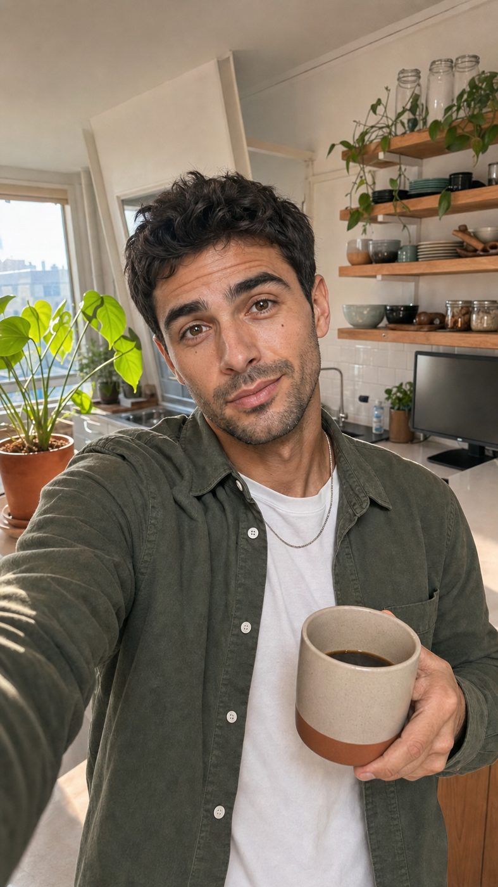
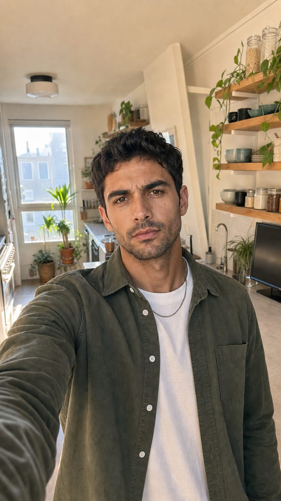
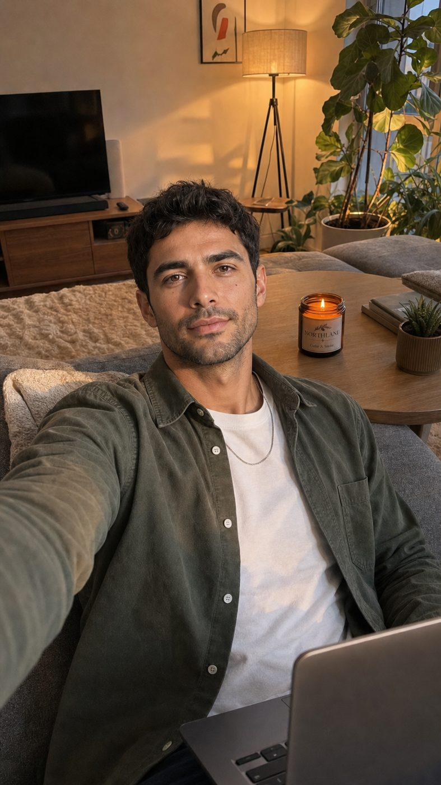
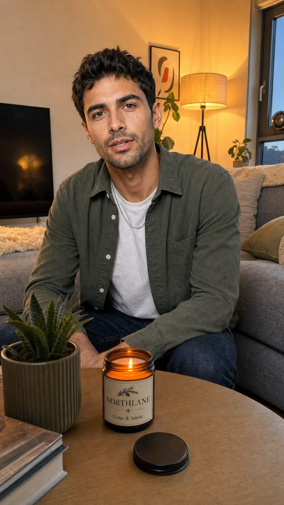
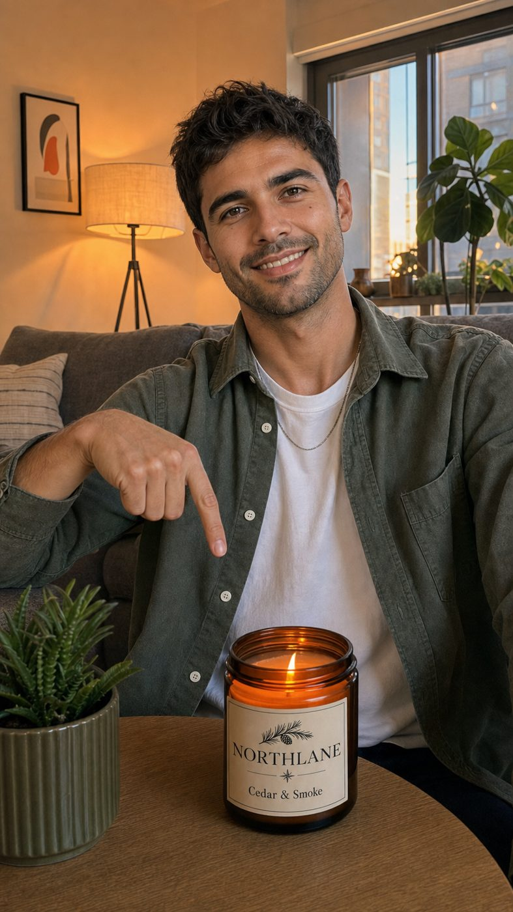
| Time | Who | Line | Unit |
|---|---|---|---|
| 0.4 to 5.3s | Jay (on camera) | “D-to-C founders, ecom teams, performance marketers: sixty seconds, and I'll save you fifty-six hundred a year.” knowing grin | A |
| 5.8 to 8.6s | Jay (on camera) | “Here's my day running ads for a candle brand.” easy, friendly | A |
| 9.3 to 12.0s | Jay (on camera) | “Seven a.m. My best ad is tired.” dry, tired | A |
| 12.8 to 15.5s | Jay (on camera) | “The agent tells me exactly what to fix.” matter-of-fact | A |
| 16.4 to 22.4s | Jay (on camera) | “Nine thirty. Four new ads by noon? One folder. Done.” brisk, then pleased | A |
| 23.4 to 29.6s | Jay (on camera) | “Twelve fifteen. Competitor drops twenty percent. The agent says: bundle it.” amused | A |
| 30.4 to 35.6s | Jay (on camera) | “Three p.m. Checkout's leaking. The C-R-O agent ranks the fixes.” focused | B |
| 36.3 to 39.6s | Jay (on camera) | “Six thirty. Real profit, not just ad numbers.” relaxed | B |
| 40.4 to 47.2s | Jay (on camera) | “Eight A-I tools: four sixty-eight a month. This: six ninety-nine rupees, once.” calm, slow on the price | B |
| 47.8 to 51.7s | Jay (on camera) | “Plus three bonuses, and a free swipe file with any add-on.” upbeat, sly | B |
| 52.3 to 56.8s | Jay (on camera) | “Sixteen agents. One Brand Brain. E-com agents dot A-I.” warm, clear | B |
| At | Template | Purpose | Sound |
|---|---|---|---|
| 0.3 | callout | audience chips + Save up to $5,616/yr | none |
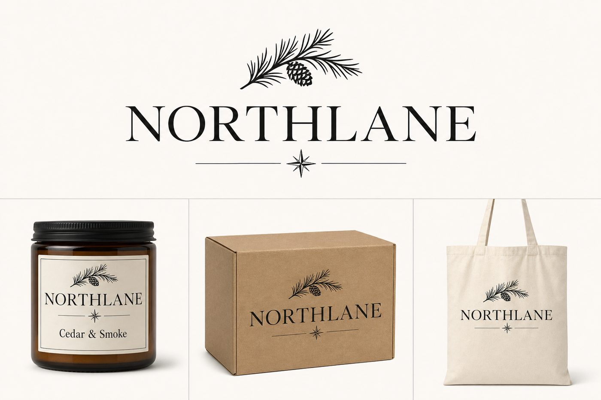
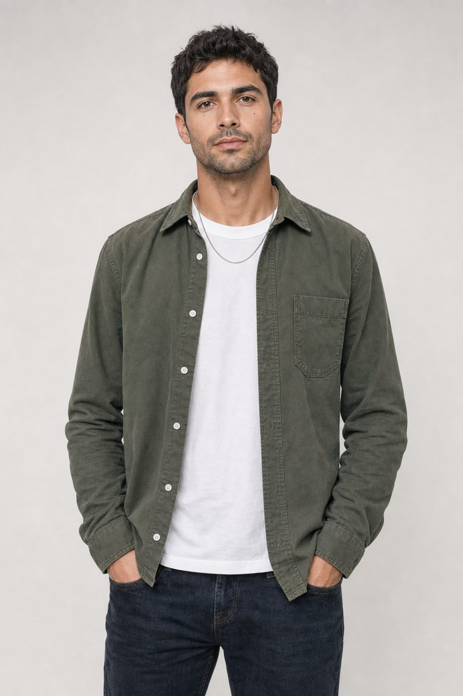
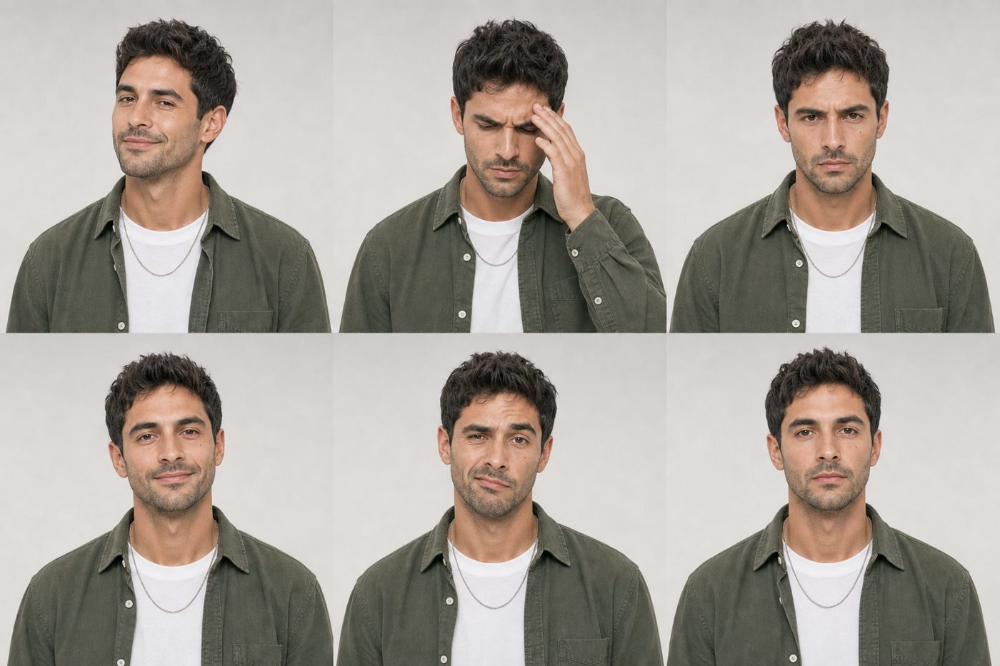
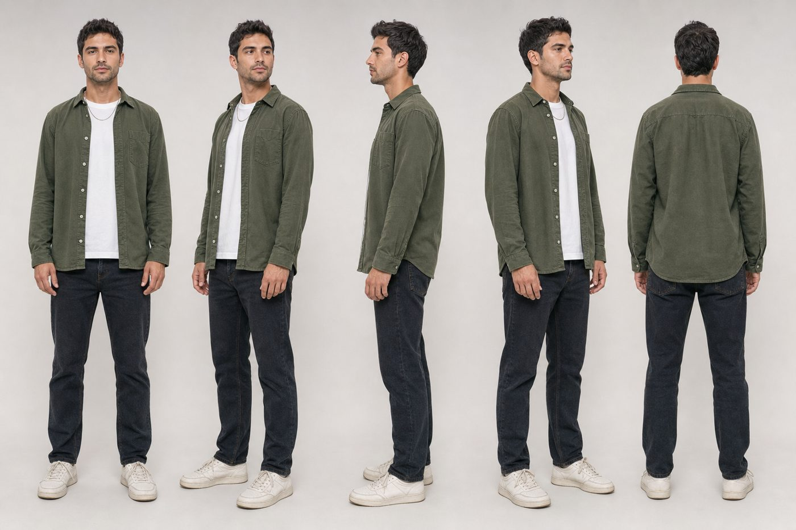
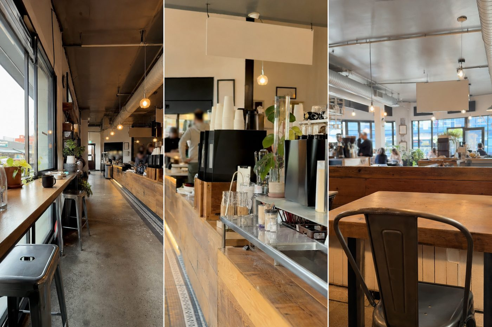
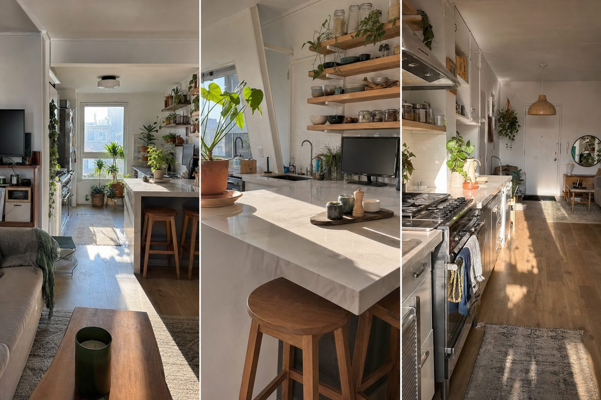
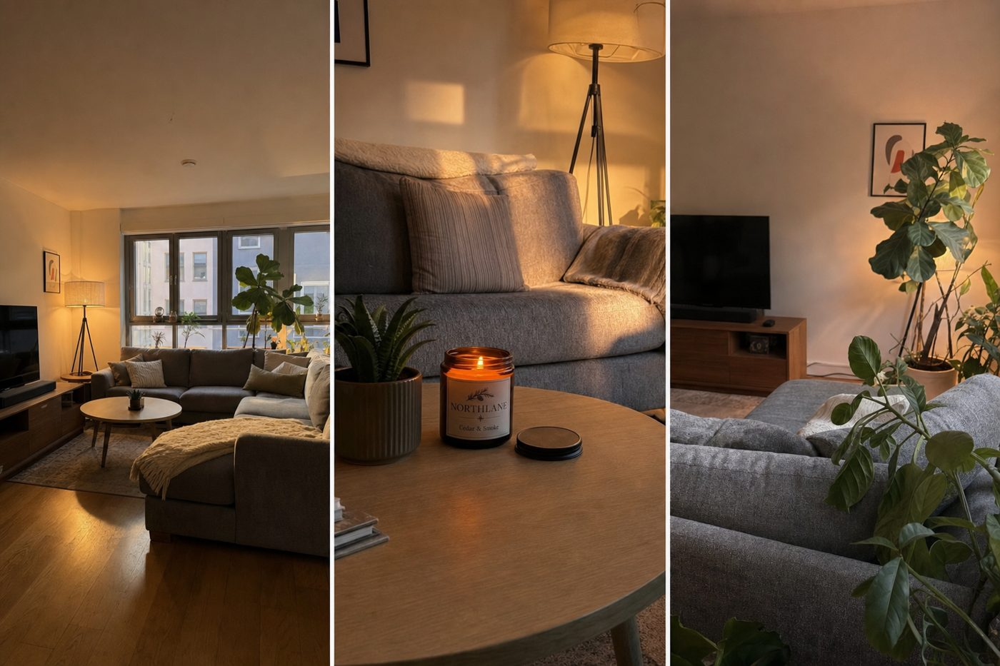
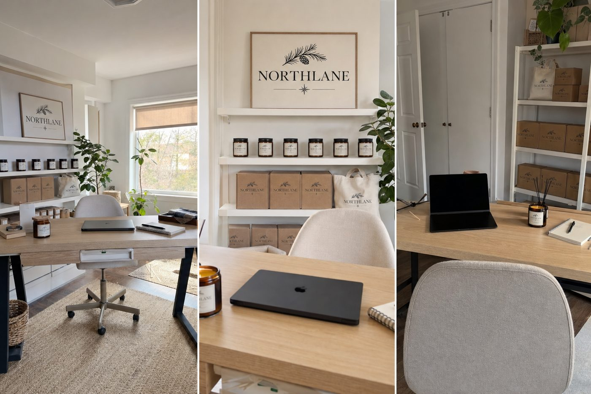
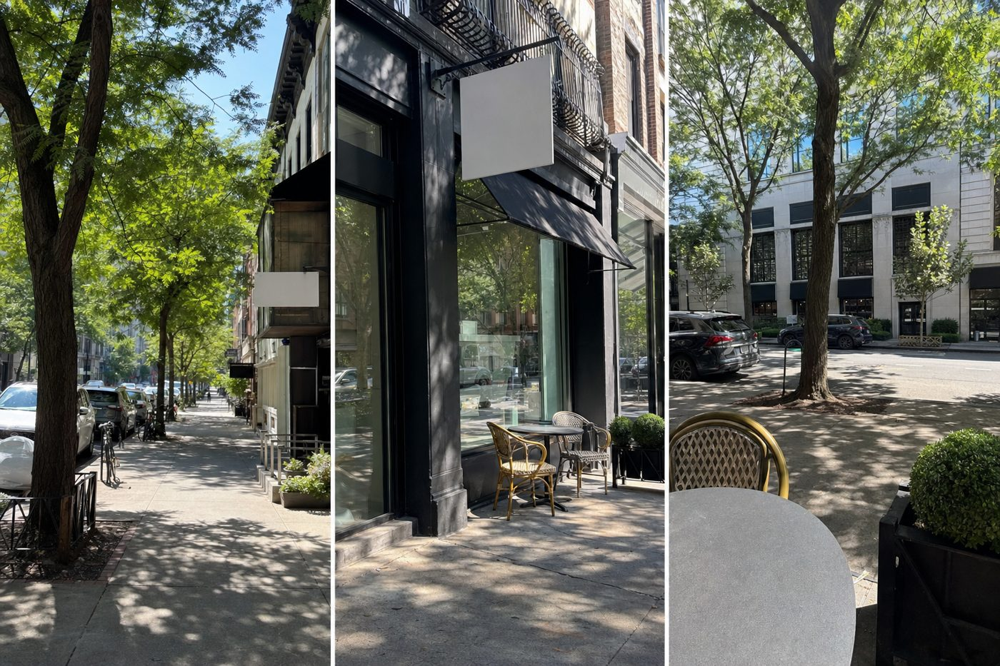